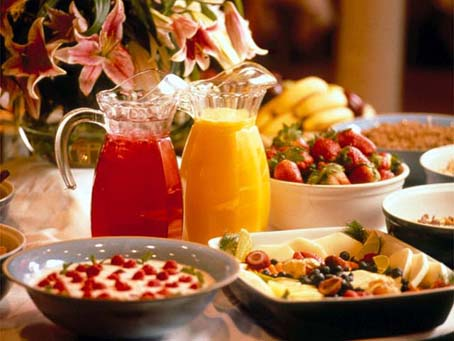

20 DESAYUNOS saludables faciles y rapidos de hacer en casa
2021.06.20 21:17
Menu recetas con POLLO Recetas de pollo para hacer con niños recetas de ALITAS DE POLLO recetas de PECHUGA DE POLLO recetas de POLLO AL HORNO recetas de POLLO EN SALSA recetas de POLLO FRITO recetas de POLLO GUISADO RECETAS caseras de APERITIVOS FACILES Y RAPIDOS TAPAS Y PINCHOS PARA BARES recetas de CARNES recetas de PESCADO recetas CON QUESO recetas de VERDURAS RECETAS DE CALABAZA RECETAS DE BERENJENAS RECETAS CON CALABACÍN RECETAS CON ESPINACAS RECETAS DE ALCACHOFAS RECETAS CON BRÓCOLI RECETAS DE COLIFLOR OTRAS VERDURAS recetas de SOPAS Y CREMAS RECETAS DE CREMAS DE VERDURAS RECETAS DE SOPAS RECETAS DE POSTRES CASEROS FACILES Y RAPIDOS TARTAS SIN HORNO POSTRES SIN HORNO RECETAS DE BIZCOCHOS TARTAS DE CHOCOLATE TARTAS FÁCILES DE HACER EN CASA POSTRES CON HORNO recetas con ARROZ recetas de PASTA recetas de LEGUMBRES recetas de ENSALADAS recetas de PATATAS recetas de HUEVO recetas de SALSAS TRUCOS DE COCINA recetas de PIZZAS Y PANES ESTILO DE VIDA RECOPILACIONES DE COCINA CASERA Y FACIL RECETAS ESPECIALES RECETAS DE COMIDAS FACILES RAPIDAS Y RICAS DE HACER RECETAS VEGETARIANAS RECETAS POR MOMENTO DEL DIA Desayunos Almuerzos Comidas Meriendas Cenas Recetas de COCINA PARA NIÑOS Desayunos para niños Comidas para niños Meriendas para niños Cenas para niños Recetas para EMBARAZADAS Recetas para llevar al trabajo Recetas SIN GLUTEN Recetas SANAS Recetas SIN LACTOSA Recetas BAJAS EN CALORIAS Recetas SIN CARNE Recetas FITNESS Recetas SIN GRASA Recetas CON FIBRA Recetas LIGHT recetas para CONGELAR RECETAS DE COCINA INTERNACIONAL Comida CHINA Comida MEXICANA Comida ITALIANA TODAS las Recetas SOBRE GORKA BARREDO RECETAS DE VERANO recetas con POLLO Recetas de pollo para hacer con niños recetas de ALITAS DE POLLO recetas de PECHUGA DE POLLO recetas de POLLO AL HORNO recetas de POLLO EN SALSA recetas de POLLO FRITO recetas de POLLO GUISADO RECETAS caseras de APERITIVOS FACILES Y RAPIDOS TAPAS Y PINCHOS PARA BARES recetas de CARNES recetas de PESCADO recetas CON QUESO recetas de VERDURAS RECETAS DE CALABAZA RECETAS DE BERENJENAS RECETAS CON CALABACÍN RECETAS CON ESPINACAS RECETAS DE ALCACHOFAS RECETAS CON BRÓCOLI RECETAS DE COLIFLOR OTRAS VERDURAS recetas de SOPAS Y CREMAS RECETAS DE CREMAS DE VERDURAS RECETAS DE SOPAS RECETAS DE POSTRES CASEROS FACILES Y RAPIDOS TARTAS SIN HORNO POSTRES SIN HORNO RECETAS DE BIZCOCHOS TARTAS DE CHOCOLATE TARTAS FÁCILES DE HACER EN CASA POSTRES CON HORNO recetas con ARROZ recetas de PASTA recetas de LEGUMBRES recetas de ENSALADAS recetas de PATATAS recetas de HUEVO recetas de SALSAS TRUCOS DE COCINA recetas de PIZZAS Y PANES ESTILO DE VIDA RECOPILACIONES DE COCINA CASERA Y FACIL RECETAS ESPECIALES RECETAS DE COMIDAS FACILES RAPIDAS Y RICAS DE HACER RECETAS VEGETARIANAS RECETAS POR MOMENTO DEL DIA Desayunos Almuerzos Comidas Meriendas Cenas Recetas de COCINA PARA NIÑOS Desayunos para niños Comidas para niños Meriendas para niños Cenas para niños Recetas para EMBARAZADAS Recetas para llevar al trabajo Recetas SIN GLUTEN Recetas SANAS Recetas SIN LACTOSA Recetas BAJAS EN CALORIAS Recetas SIN CARNE Recetas FITNESS Recetas SIN GRASA Recetas CON FIBRA Recetas LIGHT recetas para CONGELAR RECETAS DE COCINA INTERNACIONAL Comida CHINA Comida MEXICANA Comida ITALIANA TODAS las Recetas SOBRE GORKA BARREDO RECETAS DE VERANO
Cocina Casera » RECETAS ESPECIALES » RECETAS POR MOMENTO DEL DÍA » DESAYUNOS SALUDABLES FACILES Y RAPIDOS
DESAYUNOS SALUDABLES FACILES Y RAPIDOS
DESAYUNOS SALUDABLES, FACILES Y RAPIDOS
Seguro que has oído muchas veces que el desayuno es considerado la comida más importante del día. Después de muchas horas de descanso y ayuno, necesitamos activar de nuevo nuestro metabolismo y reponer los minerales que nuestro cuerpo ha utilizado mientras dormíamos. Un desayuno equilibrado cada mañana nos ayudará a comenzar el día con fuerza y repartiendo nuestras calorías. Además, te ayuda a prevenir muchas enfermedades como la obesidad y enfermedades cardiovasculares. Los desayunos basados en la dieta mediterránea son uno de los más sanos y recomendados. Desde Cocina Casera y Fácil sabemos la importancia que tiene desayunar. Por ello te proponemos una selección de nuestras mejores recetas de desayunos saludables, faciles y rapidos de hacer en casa. Puedes encontrar recetas deliciosas que, si las acompañas de lácteos, fruta e incluso de cereales, conseguirás un desayuno completo y sobre todo delicioso.
BENEFICIOS DE UN DESAYUNO SALUDABLE
Un desayuno completo y saludable cada mañana tiene muchos beneficios para nuestra salud. Sin embargo, la mayor parte de la población sigue sin desayunar correctamente cada mañana, bien por falta de tiempo o se alimentan de cualquier cosa. Existen muchas recetas de desayunos saludables, fáciles y rápidos que además de ahorrar mucho tiempo en la cocina, conseguirás realizar un desayuno completo si los acompañas de frutas y lácteos. Veamos cuales son los beneficios de desayunar cada mañana:
Mejora el rendimiento físico y escolar. Es muy importante que los niños desayunen cada mañana antes de ir al colegio. Ayuda a mantener un peso corporal normal. Previene el sobrepeso. Los desayunos mejoran el rendimiento intelectual. Incrementa la concentración, la memoria y otras habilidades mentales. Aumenta la productividad en el trabajo. Te permite mantener un buen crecimiento y desarrollo. Contribuye a mantener tu salud y bienestar. Las personas que desayunan tienen un mayor consumo de vitaminas y minerales. Reduce la ansiedad por comer y permite llegar al almuerzo con menos hambre.Después de leer todos sus beneficios, ¿todavía sigues pensando que el desayuno no es importante? Se dice que hay que dedicarle un mínimo de 15 minutos y que debe de ser un momento de tranquilidad y relajación. Por ello, nuestras recetas de desayunos saludables, faciles y rapidos te ayudarán a que cada mañana prepares una comida diferente y deliciosa.
Si te gustan nuestros desayunos saludables, fáciles y rápidos, descubre nuestras recetas de meriendas . ¿Cuál vas a preparar hoy?
RECETAS DE DESAYUNOS SALUDABLES, FACILES Y RAPIDOS
BIZCOCHO CASERO CON 3 INGREDIENTES
Bizcocho casero con 3 ingredientes: por Gorka Barredo RECETA FACIL DEL BIZCOCHO GENOVES CON 3 INGREDIENTES Hoy vamos a hacer un bizcocho casero como se ha hecho durante toda
RecetaBIZCOCHO DE LECHE ESPONJOSO CASERO
RECETA DEL BIZCOCHO DE LECHE ESPONJOSO CASERO Un delicioso bizcocho de leche esponjoso casero, ideal para comer tal cual, con mermelada o para mojar en leche. INGREDIENTES:
RecetaTARTA DE MANZANA FACIL
Tarta de manzana facil: por Gorka Barredo RECETA DE LA TARTA DE MANZANA CASERA ¿Quién no conoce la tarta de manzana?. Un más que popular postre que tiene muchas
RecetaBIZCOCHO DE CHOCOLATE receta
Bizcocho de chocolate: por Verónica Redondo RECETA DEL BIZCOCHO DE CHOCOLATE JUGOSO Y ESPONJOSO Este bizcocho de chocolate jugoso no es como la mayoría de los que hayas probado .
RecetaTORTILLA DE PATATA RELLENA DE QUESO Y JAMON
Tortilla de patatas rellena de queso y jamón: por Gorka Barredo RECETA DE LA TORTILLA DE PATATAS RELLENA DE QUESO Y JAMON La tortilla de patatas rellena de queso
RecetaTARTA DE OREO CASERA SIN HORNO
RECETA DE LA TARTA DE OREO SIN HORNO ¿Te gusta la tarta de queso? Entonces, esta tarta de oreo casera te gustará aún más. Y es tan fácil que se
RecetaTORTILLA DE PATATAS LIGHT
Una porción de tortilla de patatas de 250g, tiene en torno a 500 kcal. La misma cantidad de esta tortilla de patatas light, tiene 300 kcal ¡Poco más de
RecetaBIZCOCHO DE ZANAHORIA receta
Bizcocho de zanahoria esponjoso: Por Gorka Barredo RECETA DEL BIZCOCHO DE ZANAHORIA ESPONJOSO En esta ocasión, vamos a preparar un bizcocho de zanahoria casero. También conocido como pastel
RecetaGALLETAS DE AVENA Y PLÁTANO
Galletas de avena y plátano: por Gorka Barredo RECETAS DE GALLETAS DE AVENA Y PLATANO SALUDABLES ¡Cómo nos gustan las galletas! Muchos de nosotros, desde pequeños, hemos elaborado, junto
RecetaSANDWICH DE POLLO receta facil
RECETA DEL SANDWICH DE POLLO Aquí te voy a enseñar a hacer un sandwich de pollo que me enseñó la mejor maestra culinaria que todos o casi todos podamos
RecetaBIZCOCHO DE YOGUR NATURAL
Que decir de el bizcocho Ya sea un bizcocho de yogur esponjoso, de un bizcocho de leche o de uno convencional, esta receta es sin duda de esas que
RecetaBIZCOCHO DE LIMÓN
BIZCOCHO DE LIMÓN El bizcocho de limón es uno de esos dulces que nunca falla como aperitivo, postre o desayuno. Hoy vamos a cocinar uno muy esponjoso, porque vamos
RecetaMAGDALENAS DE NARANJA Y YOGUR
Magdalenas de naranja y yogur: por Verónica Redondo RECETA FÁCIL DE LAS MAGDALENAS DE NARANJA Y YOGUR En esta ocasión vamos a preparar un postre. Pero no un postre
RecetaBIZCOCHO DE CHOCOLATE ESPONJOSO
El bizcocho de chocolate esponjoso es un dulce muy fácil y rápido de hacer. Tan solo hay que conocer las medidas para prepararlo. Y aquí te las voy a
RecetaBIZCOCHO DE NARANJA receta
Bizcocho de naranja: por Verónica Redondo RECETA DEL BIZCOCHO DE NARANJA ESPONJOSO Bizcocho de naranja. Una receta muy fácil de hacer en casa. Existen infinidad de recetas de bizcochos,
RecetaTORTILLA FRANCESA CON QUESO
En esta ocasión, vamos a preparar una tortilla francesa con queso. O más bien, rellena de este ingrediente, para que se deshaga en boca cuando lo vayamos
RecetaBROWNIE EN TAZA SIN AZUCAR
RECETA DEL BROWNIE EN TAZA SIN AZUCAR FACIL Brownie en taza sin azucar. Una forma muy rápida y sencilla de preparar este delicioso postre. Lo vamos a preparar en
RecetaBIZCOCHO DE PLATANO
RECETA DEL BIZCOCHO DE PLATANO Bizcocho de platano. El bizcocho es uno de los postres que más se prepara en los hogares de todo el mundo. Se trata de
RecetaDONUTS CASEROS AL HORNO
Donuts caseros al horno: por Víctor F. Ábalos RECETA DE DONUTS CASEROS ESPONJOSOS AL HORNO ¿Quién no ha comido alguna vez un donut? Estoy seguro que pocas personas van
RecetaPAN DE PLATANO
Pan de platano: por Verónica Redondo RECETA DEL PAN DE PLATANO CASERO ¿Te gusta acompañar tu desayuno con un delicioso dulce? Actualmente, podemos encontrar infinidad de recetas de este
RecetaSi te ha gustado esta receta puedes seguirme en las diferentes redes sociales en las que estoy:
Leave a Reply Cancelar la respuesta
Este sitio usa Akismet para reducir el spam. Aprende cómo se procesan los datos de tus comentarios .
Sigue a Gorka Barredo:
Recetas de Verano ☀️
Sugerencias de Gorka Barredo: El chef
Pollo al horno con patatas Tarta de queso sin horno Tarta de manzana Arroz con leche Crema pastelera Berenjenas rellenas Espaguetis Carbonara Bizcocho de chocolate SUPER jugoso Salsa de tomate casera macarrones con carne Pollo a la cerveza Pollo guisado con verduras Ensalada cesar Cocer pulpo Espaguetis rojo con tomate Alubias blancas con verduras Galletas de mantequilla Garbanzos con espinacas Cocer arroz blanco
TODAS LAS RECETAS DE COCINA CASERA Y FÁCIL POR ORDEN ALFABÉTICO
Últimas recetas de Cocina Casera y Facil
ALITAS DE POLLO ADOBADAS AL HORNO ENTRECOT DE TERNERA CON SALSA DE CHAMPIÑONES SOPA DE POLLO CON FIDEOS BERENJENAS CON TOMATE Y QUESO AL HORNO LOMO EN SALSA DE CEBOLLA TARTA DE NARANJA SIN HORNO CAFE DE CALABAZA CERDO AGRIDULCE CHINO ENSALADA CAPRESE ALITAS DE POLLO A LA CERVEZACONTACTO Aviso legal y condiciones de uso Política de privacidad Política de Cookies
RECETAS MÁS BUSCADAS
Pollo al horno con patatas y cebolla Tacos mexicanos Pollo a la naranja Hamburguesas caseras Bizcocho esponjoso casero Bizcocho con 3 ingredientes Muslos de pollo asados al horno Pollo frito crujiente Pollo agridulce chino Recetas con calabacín Recetas y comidas vegetarianas Recetas de almuerzos rápidosRecetas de Cocina Casera y Fácil Copyright © 2021.
